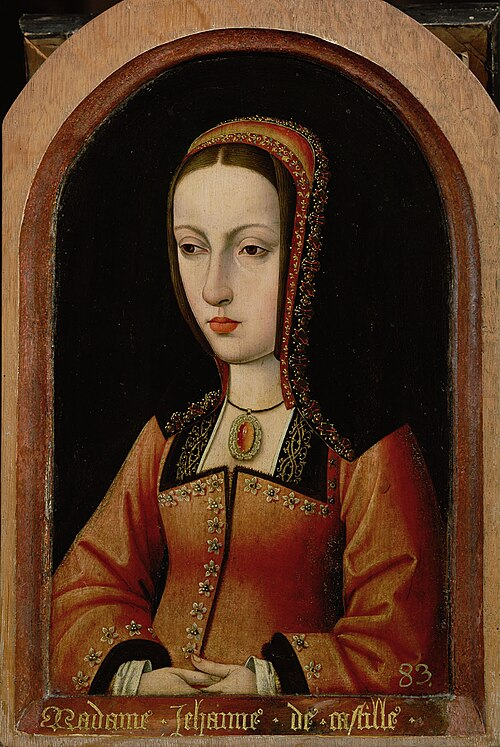
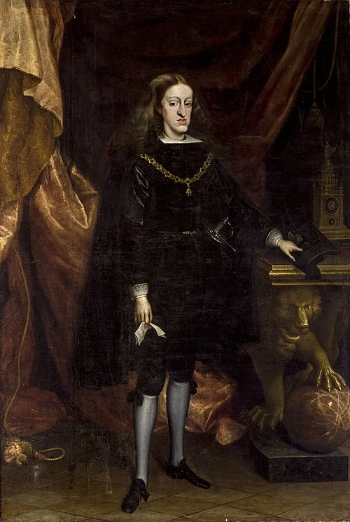

| Retrato | Monarca | Dinastía | Reinado | |
|---|---|---|---|---|
| Inicio | Fin | |||
|
Isabel I de Castela | Tastámara | ||
|
Fernando II de Aragón | Tastámara | ||
|
Xoana I | Tastámara | ||
|
Filipe I | Hasburgo | ||
|
Carlos I | Hasburgo | ||
|
Filipe II | Hasburgo | ||
|
Filipe III | Hasburgo | ||
|
Filipe IV | Hasburgo | ||
|
Carlos II | Hasburgo | ||
|
Filipe V | Borbón | ||
 |
Luis I | Borbón | ||
|
Fernando VI | Borbón | ||
 |
Carlos III | Borbón | ||
| Resumo por dinastías | Monarcas | Suma dos anos | ||
| Trastámara | 3 | 121 | ||
| Hasburgo | 6 | 190 | ||
| Borbón | 4 | 88 | ||